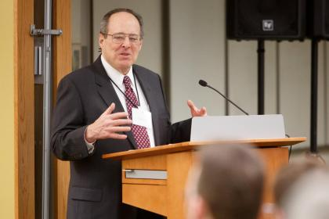
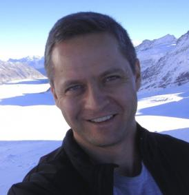
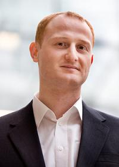
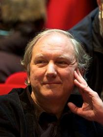
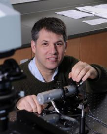
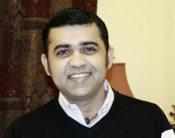

Mind Bytes Speakers and Abstracts
This list is not exhaustive, but below you will find a number of the speakers who will present at Mind Bytes.
Opening Remarks
Don Levy
Vice President for Research and National Laboratories

Biography:
Donald H. Levy, Albert A. Michelson Distinguished Service Professor in
Chemistry, is the University of Chicago’s Vice President for Research
and for National Laboratories, CEO of UChicago Argonne, LLC,
Vice-chairman of the Board of Governors for Argonne, and a Member of the
Board of Directors for Fermilab.
Named to the University position in 2007, Levy’s responsibilities
include oversight of the management contracts for both Argonne National
Laboratory and Fermi National Accelerator Laboratory, the Office of
Technology and Intellectual Policy, the Office of University Research
Administration, the Research Computing Center, Arete (UChicago’s
research accelerator), University-Argonne research centers and all
issues related to Human Subjects Research. The annual research budget of
the University is more than $400 million. The combined annual research
budget for Argonne and Fermilab is $900 million.
In addition to his responsibilities for research across the University
and Argonne campuses, Levy chairs the Science Policy Council, a
collaboration with Argonne, Northwestern University and the University
of Illinois, established in 2005 to enhance Argonne's scientific
capabilities, to strengthen the state's technological base and workforce
preparation, and to improve Illinois' ability to compete for federal
research funding.
Levy joined the University of Chicago faculty in 1967. He is a member
of the National Academy of Sciences and a Fellow of the American Academy
of Arts and Sciences, the American Physical Society and the American
Association for the Advancement of Science. He is a former Chairman of
the Chemistry Department and he played an important leadership role in
planning the new Gordon Center for Integrative Science. A physical
chemist, Levy was a leader in developing and using supersonic jet
cooling to study the structure of molecules.
Levy was editor of the Journal of Chemical Physics from 1998 - 2008.
His awards include the E. Bright Wilson Award in Spectroscopy and the
Ellis Lippincott Award from the Optical Society of America and the
Plyler Prize of the American Physical Society. He received his B.A. from
Harvard University, and his Ph.D. from the University of California,
Berkeley.
Faculty Lightning Talks
Juan de Pablo
Liew Family Professor in Molecular Engineering, Institute for Molecular Engineering

Biography/Research Interests:
Much of Juan de Pablo’s work entails conducting supercomputer
simulations to understand and design new materials from scratch and to
find applications for them.
He is a leader of simulations of polymeric materials, including DNA
dynamics — how DNA molecules arrange and organize themselves and
interact with other DNA molecules. He also studies protein aggregation
and its poorly understood relationship to various diseases, including
type II diabetes and neurodegenerative disorders.
De Pablo earned a bachelor’s degree in chemical engineering from
Universidad Nacional Autónoma de México in 1985. After completing his
doctorate in chemical engineering from the University of California,
Berkeley, in 1990, he conducted postdoctoral research at the Swiss
Federal Institute of Technology in Zurich, Switzerland, then joined the
faculty of the University of Wisconsin. He came to the University of
Chicago in 2012.
Andrey Kravtsov
Professor, Department of Astronomy and Astrophysics, Kavli Institute for Cosmological Physics, and The Enrico Fermi Institute

Biography/Research Interests:
Andrey Kravtsov's main area of research is modeling of various aspects
of structure formation in the Universe using numerical simulations. The
primary focus of his work is thus development and analyses of computer
models of galaxies and galaxy clusters and tests of model predictions
against observations from very early epochs to the present. These tests
are used to investigate the implications of various hypotheses regarding
the nature of dark matter and dark energy, as well as constraining
parameters of the cosmological model that describes our Universe. He is
also interested in developing and using new numerical and scientific
visualization techniques. To run high-resolution numerical
simulations he uses large supercomputers at the national
supercomputer centers and those abroad.
Kravtsov earned his bachelor's degree in physics and astronomy from
Moscow State University in 1994 and a master's degree in physics from
the same university in 1995. He earned a master's degree in astronomy in
1997 and a PhD in astronomy and computer science in 1999 from New
Mexico State University.
Burhaneddin Sandikci
Associate Professor of Operations Management, Booth School of Business

Biography/Research Interests:
Burhaneddin Sandikçi studies decision-making problems under uncertainty
with special interest in problems in medical decision making and health
care operations. He is particularly interested in the mathematical
modeling and analysis of such problems. His research is widely motivated
by practical considerations and he heavily uses real data in
calibrating and solving his models. His most recent work include
modeling and analyzing the accept/reject problem faced by liver
transplant patients. Using large databases and sophisticated
mathematical models, this work demonstrates the impact of using the
partially observable waiting list information (as available in the
current practice) on patient’s life expectancies.
A native of Turkey, Sandikçi earned a bachelor's degree in industrial
engineering from Marmara University in Istanbul in 1999. He earned two
master's degrees: one in industrial engineering from Bilkent University
in Ankara in 2001 and one in operations research from the University of
North Carolina at Chapel Hill in 2003. He earned a PhD in industrial
engineering from the University of Pittsburgh in 2008. Sandikçi joined
the Chicago Booth faculty in 2008.
John Goldsmith
Edward Carson Waller Distinguished Service Professor, Department of Linguistics, Department of Computer Science

Dr. John Goldsmith's current research interests lie in the history of
linguistic thought, and the development of machine learning models for
the inference of linguistic structure from raw textual data. He spent
the academic year 2006-2007 working with Bernard Laks at the Université
de Paris X (Nanterre), working on a book entitled Battle in the Mind
Fields, dealing with the development of the mind sciences in the 20th
century.
Since 1997, he has been working on an open-source computational
linguistics project named Linguistica, whose goal is to
automatically develop a morphological analysis of an unknown language
from a raw sample of text, using the tools of information theory to make
explicit what linguistic structure is.
David Biron
Assistant Professor, Department of Physics, James Franck Institute, and the College

Biography/Research Interests:
David Biron studies the behavior of the roundworm Caenorhabditis elegans in
the hopes of shedding light on the function and evolutionary origins of
animal behaviors such as locomotion, feeding and sleep. He is
particularly interested in the sleep-like behavior of C. elegans,
and its implications for the origin of sleep in animals. To answer
these fundamental questions about animal behavior, Biron’s lab brings
together scientists from fields as disparate as physics, neuroscience
and genetics. Biron received his PhD from the Weizmann Institute in
2004, and joined the Chicago faculty in 2009.
Innovation and Inspiration through Cognitive Computing
Swami Chandrasekaran
Executive Architect & Technical Leader, Watson CTO Office, IBM

Abstract:
Innovation and Inspiration through Cognitive Computing
Imagine if you could take the skills, and experience of your
organization's top experts and scale that insight across your entire
organization. Imagine if you could find new related pathways in your
data to make discoveries in a fraction of the time you could before.
Imagine a world where information presented itself at the point of
possibility, decisions were made with all available evidence, and the
expertise of your entire organization was available on demand. This is
the power of what can be achieved with Cognitive Computing. IBM Watson a
cognitive system and is the new competitive advantage. In this session
you will get a look at what is next for cognitive computing, and learn
how you can capture a sustained competitive advantage today by tapping
into the transformative power of IBM Watson.
Biography:
Swami sets & drives the technical agenda and cognitive computing,
works with clients on building IBM Watson based cognitive, analytics
& big data solutions. His team is responsible for driving the
technical strategy around customization of Watson for various solutions
in key industries, such as healthcare, telecom, public sector and
financial services.
Prior to his current role, Swami was the chief architect for IBM
Software - Business Solutions. Under his leadership, his team worked
with several customers on several solutions in the areas of OSS/BSS
transformation, cloud broker, digital media supply chain, mobile
payments, smart metering. Previously he has also worked for KPMG,
BearingPoint and Ericsson Research. He has worked with customers in 25+
countries, is an IBM Executive Certified Architect and holds a Masters
in Electrical Engineering from UT Arlington. He has authored several
books & publications in the areas of natural language processing,
data science, BPM, SOA and enterprise integration.
Big Data Panel
Michelangelo D'Agostino
Senior Data Scientist, Civis Analytics
Biography:
Michelangelo D'Agostino is a reformed particle physicist turned data
scientist. He is currently the lead data scientist for Braintree, a
Chicago-based online payments company that was recently acquired by
PayPal. Prior to Braintree, Michelangelo was a senior analyst with the
2012 Obama re-election campaign.
As a member of the campaign's highly successful analytics effort, he
used data and statistical models to effectively raise money, recruit
volunteers, and turn out voters. He holds a PhD in particle astrophysics
from the University of California, Berkeley, where he got his start
with machine learning through large-scale data analysis of neutrino
physics data from the IceCube experiment located at the South Pole. He
has published extensively in scientific journals and has covered science
and technology for The Economist.
Nick Kadochnikov
Data Scientist, Educator and Business Analytics Consultant, IBM
Biography:
Nick Kadochnikov is a data scientist, currently working as an executive
program manager for Business Analytics Transformation at IBM. Nick’s
focus is in the areas of predictive analytics, text analytics/social
media analytics, and change management. He is equally experienced in
both “doing” analytics as well as “consulting” on analytics, which
includes integrating analytical projects into the business processes to
improve their effectiveness and efficiency.
In his professional career Nick has been applying analytics to various
areas of the business, such as marketing, sales, fraud prevention,
product development, and financial optimization. He uses advanced data
mining techniques, builds econometric models, and works with big data,
including: client wallet estimates, segmentation, ROI for smart,
propensity to buy, development productivity, and social business. He
holds an MS in economics from St. Petersburg State University and MS in
global marketing management from Virginia Commonwealth University.
Joe Kleinhenz
Director, Big Data Analytics and Product Intelligence, Allstate
Biography:
Joe Kleinhenz is currently the Director of Big Data Analytics at
Allstate, driving Allstate’s efforts around Big Data and how to leverage
it with predictive analytics to bring real value to the business.
Utilizing a background in Information Technology, Marketing Analytics,
Consulting, and GE Six Sigma Black Belt certification he’s been able to
bring a well rounded and unique approach to bridging the gap between
business, IT, analytics, and people, helping to unlock data’s value
consistently delivering game changing results.
Andrei Broder
Distinguished Scientist, Google
Biography:
Andrei Broder is a Google Distinguished Scientist. From 2005 to 2012
he was a Fellow and VP for Computational Advertising at Yahoo!.
Previous positions include Distinguished Engineer at IBM and VP for
Research and Chief Scientist at AltaVista. Broder has authored more
than a hundred papers and was awarded more than forty US patents. His
current research interests are centered on personalization,
computational advertising, web search, context-driven information
supply, and randomized algorithms. He is a member of the US National
Academy of Engineering and a Fellow of ACM and of IEEE. Other honors
include the ACM Paris Kanellakis Theory and Practice Award and a PhD
Honoris Causa from the Technion.